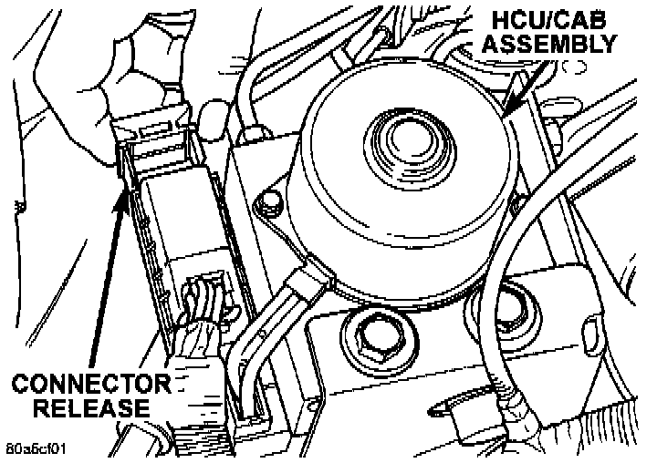
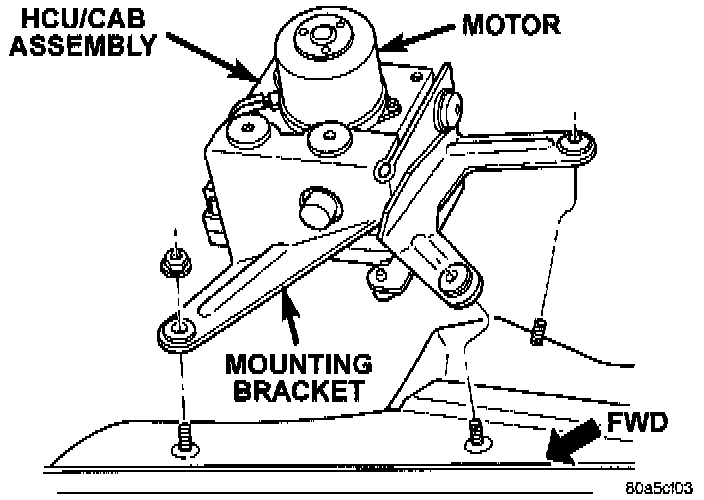

Removal and Installation
REMOVAL1. Remove negative battery cable from the battery.
2. Remove air cleaner housing.
3. Remove windshield reservoir mounting bolts and move the reservoir to the side.
4. Remove steering gear shield.
CAB Connector Release:

5. Pull Controller Antilock Brake (CAB) harness connector release out and remove connector.
6. Remove the brake lines from the Hydraulic Control Unit (HCU).
HCU/CAB Assembly:

7. Remove HCU/CAB bracket mounting nuts.
8. Remove HCU/CAB assembly from the vehicle.
9. Remove bracket bolts from the HCU/CAB assembly.
INSTALLATION
1. Install bracket onto the HCU/CAB assembly.
2. Install HCU/CAB assembly in the vehicle and tighten mounting nuts to 12 Nm (9 ft. lbs.).
3. Install the brake lines to the HCU and tighten to 16 Nm (12 ft. lbs.).
4. Install CAB harness connector and push-in connector release.
5. Install steering gear shield.
6. Install windshield reservoir and mounting bolts.
7. Install air cleaner housing.
8. Install negative battery cable to the battery.
9. Bleed complete brake system.